A tool that takes one long piece of content — a podcast episode or video, recording, blog post or any written content — and turns it into a set of shorter posts for different platforms, written in the creator's own writing style.
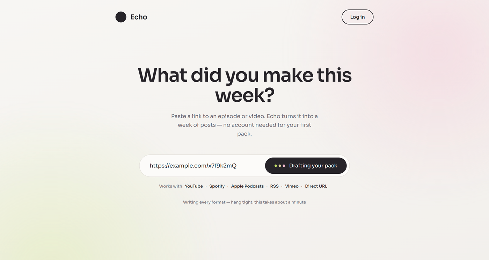
Turning one episode into posts, threads, and clips by hand is hours of work every week.
Existing AI tools produce text that reads generically. Creators end up rewriting it, which removes the point of using the tool.
Paste an episode or video link, or connect a podcast/YouTube channel so new episodes are picked up automatically.
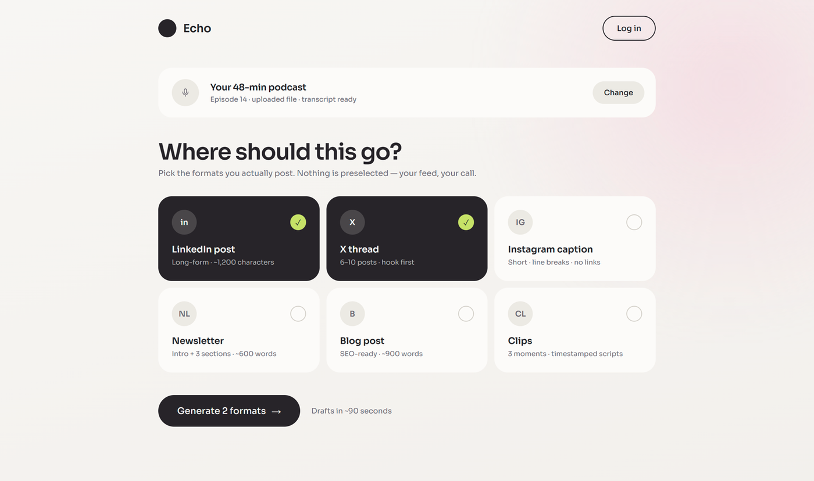
Choose which formats to make — LinkedIn post, X thread, newsletter, Instagram caption, and so on.
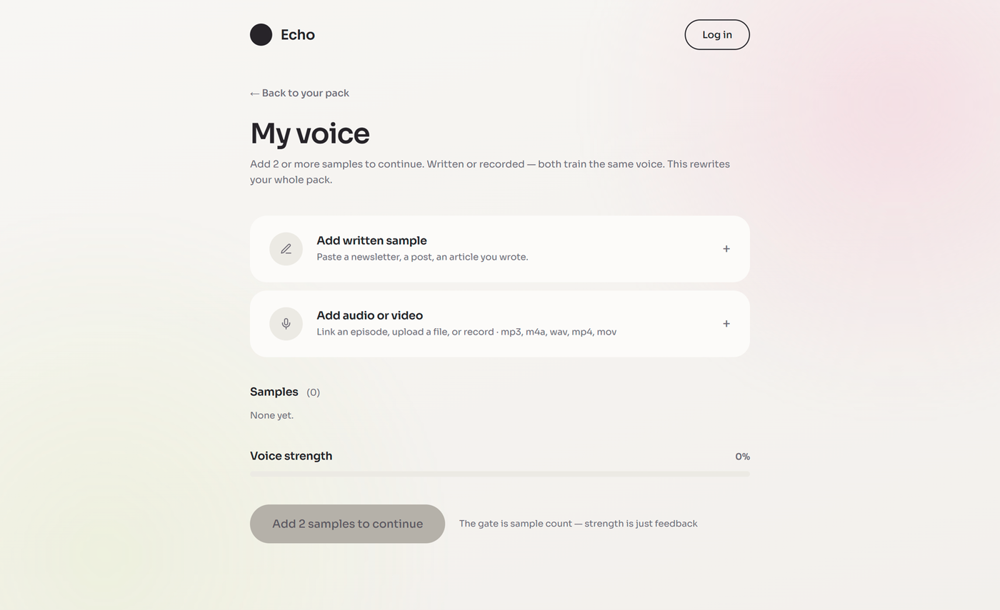
The tool generates a first draft of each piece. Before the style profile is trained, it shows these as generic drafts.
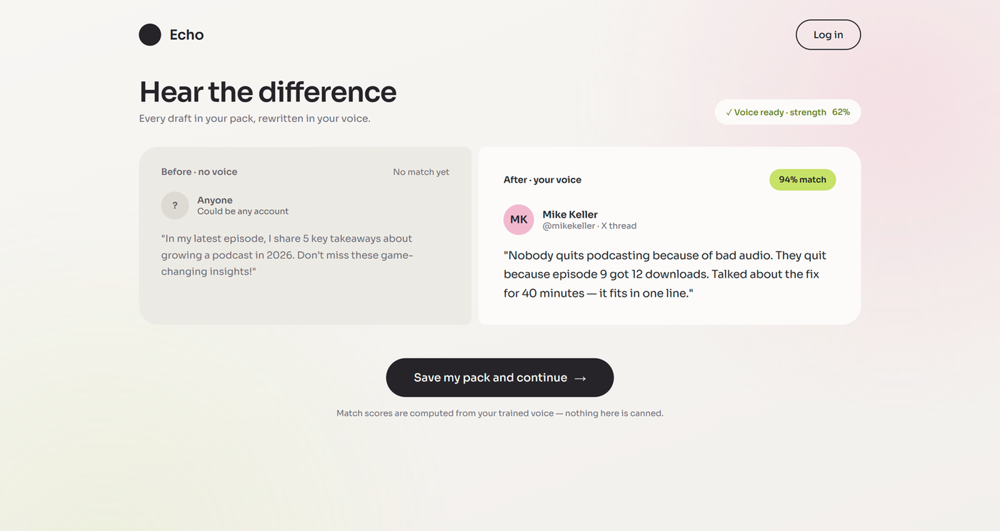
The creator adds examples of their work — writing, uploaded documents, or audio/video of them talking. The drafts are regenerated in their style.
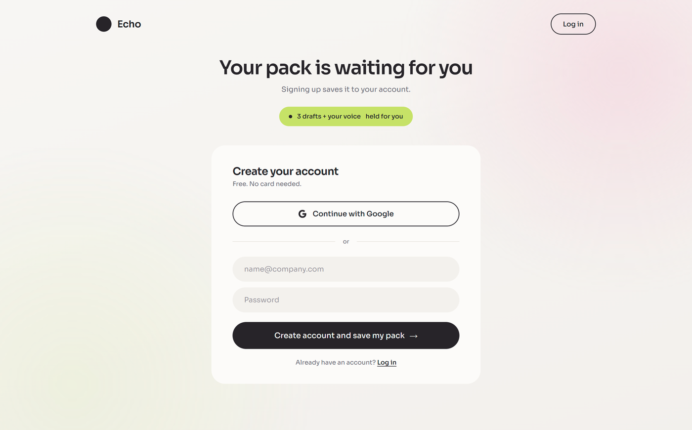
To save the pack and keep the trained style, the creator creates an account — the wall comes only after they've seen the result.
The product's value is that the AI writes in the creator's own style, and that only becomes clear once someone has trained it and seen the result. So the model is built around letting people experience the value before paying, then staying reachable afterward.
The core screens, each built for both — the same flow laid out for a wide screen and a phone.
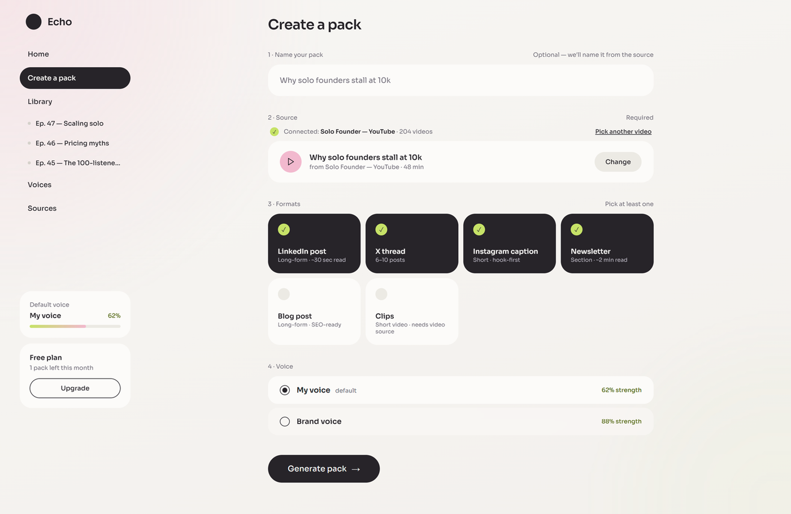
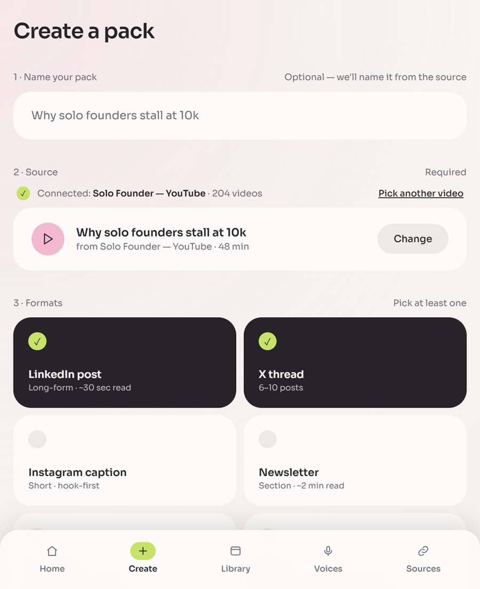
Connect a source, pick the voice, and choose the formats you want.
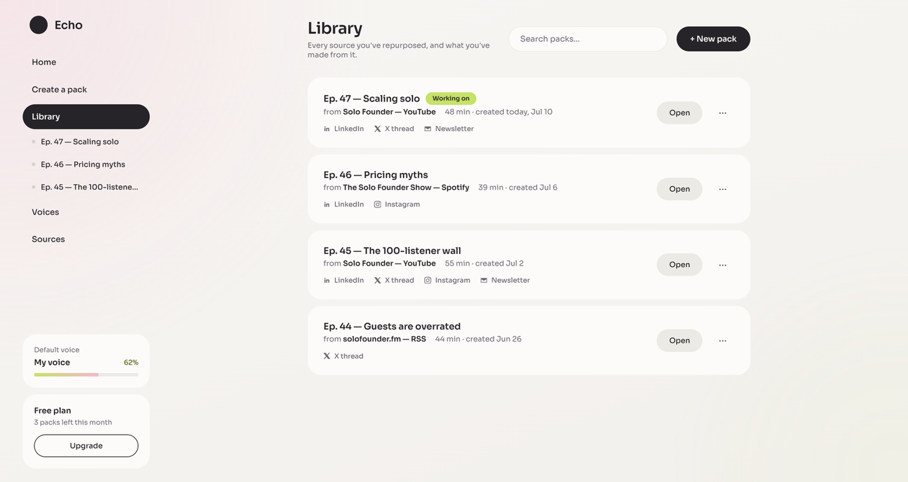
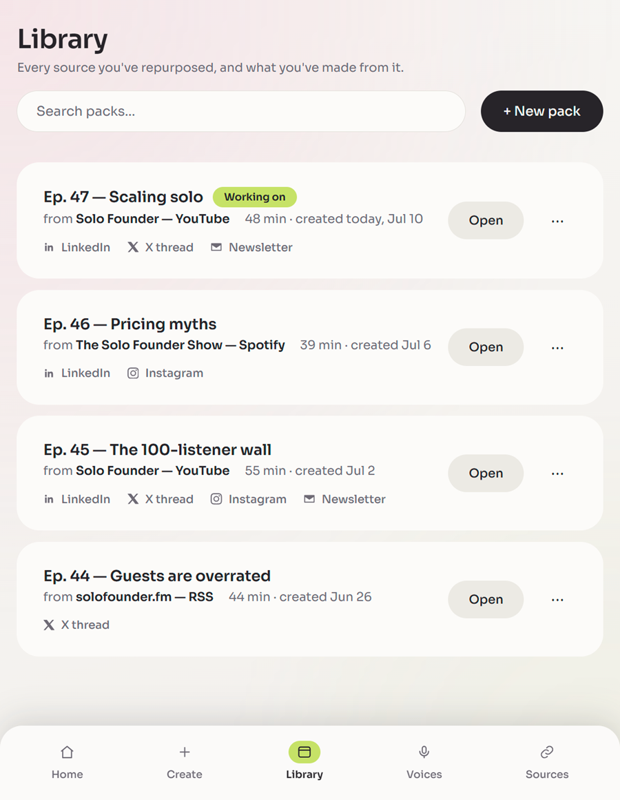
All your packs in one place, with search — filters later.
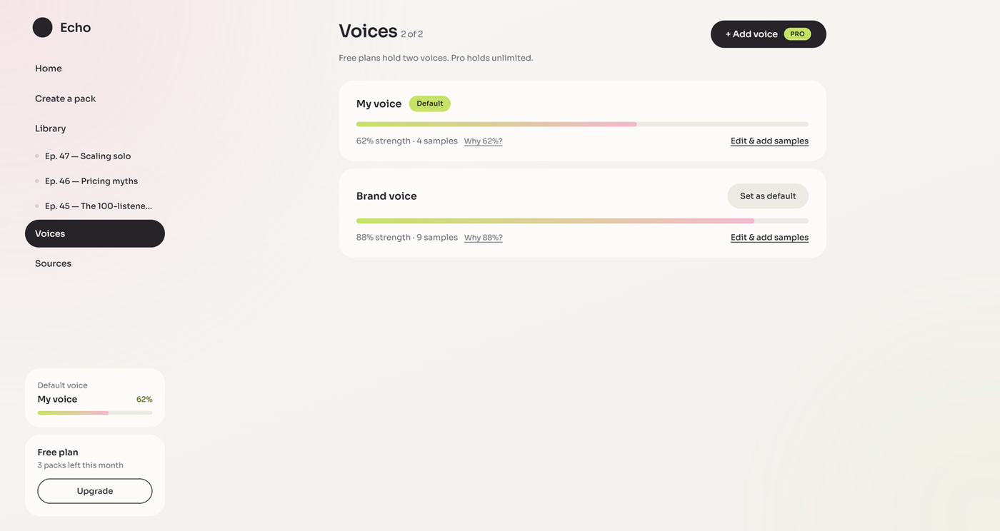
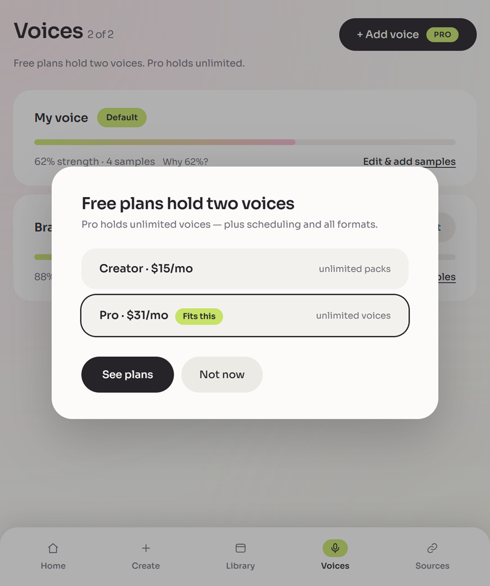
Add and manage voices, with the upgrade prompt shown in context.
The research was heavy — paid reports and articles across marketing, UX, product, and subscription-model comparisons.
To keep it from turning chaotic, I had Claude turn everything into an execution plan: staged work, each stage gated on a real outcome, with the research linked inline so I could revisit it anytime. Building the plan also taught Claude the project as it went.
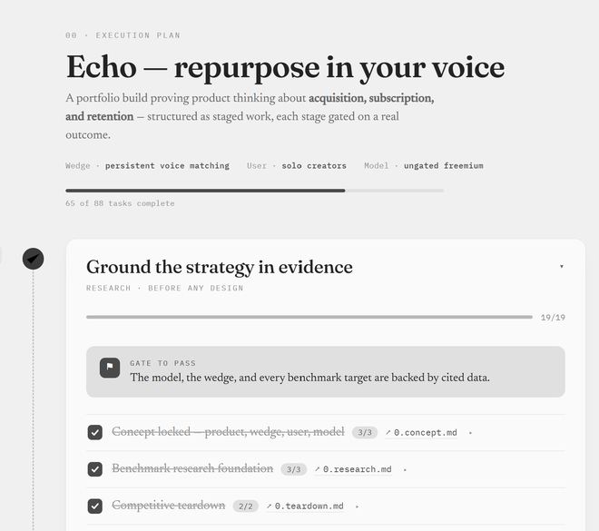
I kept the prototype in Chat rather than moving to Code or Design — it’s lighter on resources and already held all the research context.
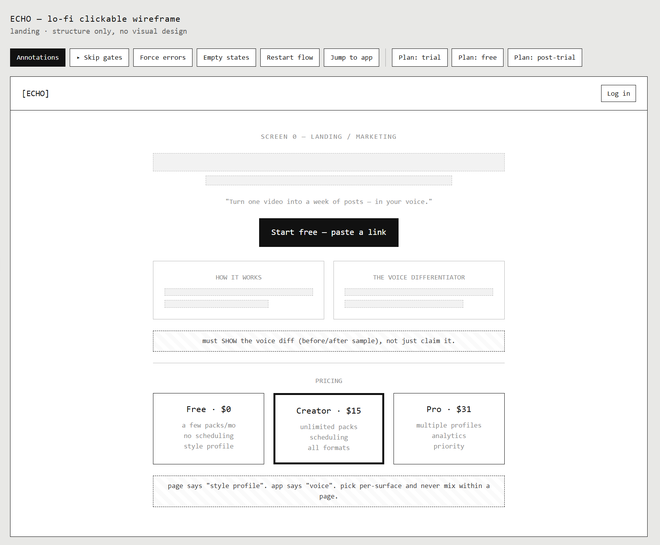
I made one styled page in Figma to set the direction, then dropped it into Claude Design to explore off that base — different colors and themes, tested live in the tweaks panel. I’d considered reworking a Dribbble shot I liked, but wasn’t comfortable publishing someone else’s work — so I steered it myself.
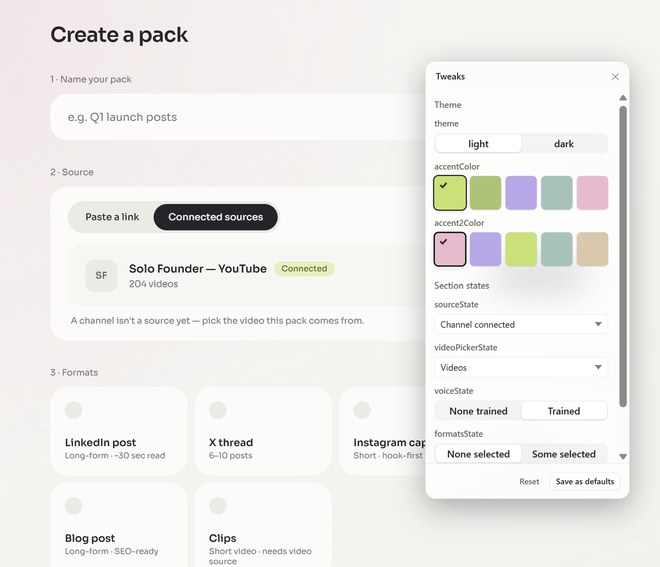
With the direction set, I built the app one screen at a time, pasting each wireframe in on its own.
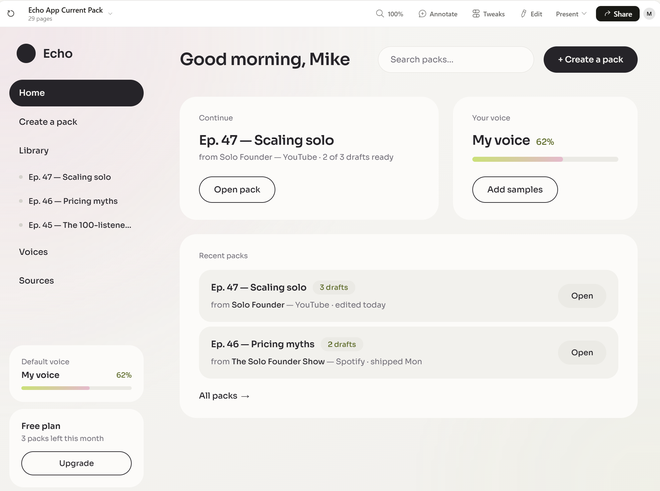
The final step was moving from design into a working build. This time I passed it straight from Claude Design to Claude Code with no extra instructions — the design system and screens carried over as-is.
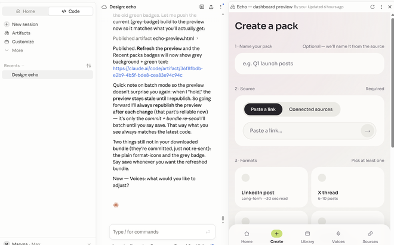
The three questions after the product works: how people find it, what it costs, and why they stay.
Creators can make a real pack before creating an account. Paid plans show up when they want more than one-off use — mainly scheduling and unlimited packs.
Active where solo creators gather, sharing honest examples, and posting openly about making the tool.
A few creators who try it and mention it if they like it — once it's good enough that people recommend it.
Inviter and invited both get something (a free month or discount). A concrete reason to bring others in — no branding asked.
Good onboarding can lift retention by around half. The tactic is cutting steps between signup and the first "win" — which Echo does with the free first pack.
The tools that survive get used on a routine. Echo connects to where the creator publishes, so they post from inside it — the more it's part of the week, the harder it is to drop.
Failed payments are 20–40% of all churn and mostly preventable — keep access during a short grace period and retry, instead of cutting people off.
A cancellation flow that matches the offer to the reason — a discount for price, help for friction — recovers a meaningful share of people who'd otherwise leave.